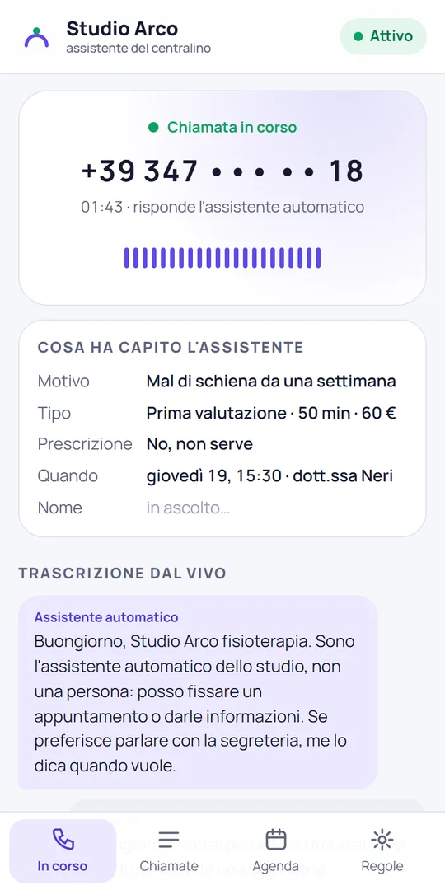

Assistente per la segreteria
Risponde a orari, indirizzo e domande sulla prima visita, e prenota. Non dà consigli sanitari: per quelli passa a una persona.
Vai al servizioHome / Per il tuo settore / Studi medici, dentisti, dietisti
Per studi medici, dentisti, dietisti e nutrizionisti.
Esempio di conversazione: nomi, indirizzi e orari sono di prova.
Prenotazioni, spostamenti, domande sulla prima visita. Il telefono squilla mentre sei con un paziente, e gli appuntamenti saltano all'ultimo.
Risponde a orari, indirizzo e domande sulla prima visita, e prenota. Non dà consigli sanitari: per quelli passa a una persona.
Vai al servizioUn avviso prima della visita e un richiamo per i controlli.
Vai al servizioAppuntamenti e documenti in ordine. Sui dati dei pazienti si lavora con regole chiare, concordate prima.
Vai al servizioContenuti chiari per farti conoscere, nel rispetto delle regole della professione.
Vedi i formati videoAttività inventate, costruite da noi: le apri dal telefono o dal computer e le provi. Le foto delle demo sono generate con l'IA.
 App per i pazienti · Studio dentistico
App per i pazienti · Studio dentisticoProssimo appuntamento, promemoria da scegliere e piano di cura con le rate.
Apri la demo Gestionale · Studio dentistico
Gestionale · Studio dentisticoAgenda delle poltrone, piani di cura a rate, preventivi e richiami: lo studio vede la giornata e i pazienti da una schermata.
Apri la demo
Agente vocale IA · Studio di fisioterapiaChiamata con trascrizione dal vivo, riepilogo per la segreteria e appuntamenti in agenda.
Apri la demoFormati da ordinare: li montiamo con il materiale che hai già, anche con l'IA. Per ognuno trovi cosa si vede e quanto dura.
I lavori dei clienti li mostriamo in call, con il loro permesso.
Raccontaci la tua attività. Prima vedi una proposta, poi decidi.